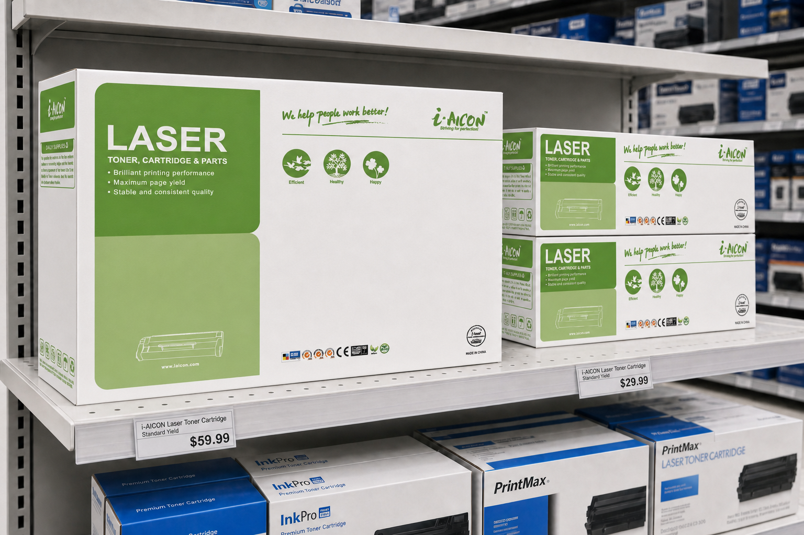
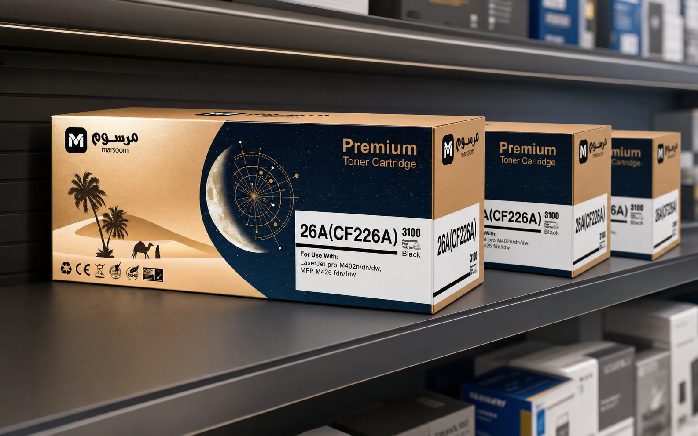
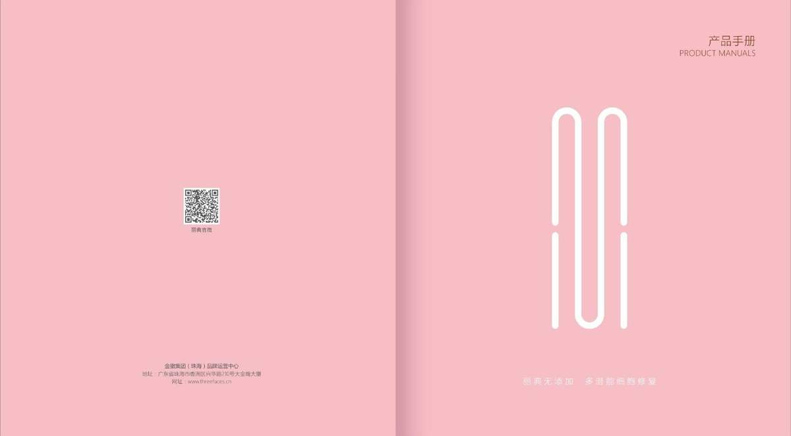
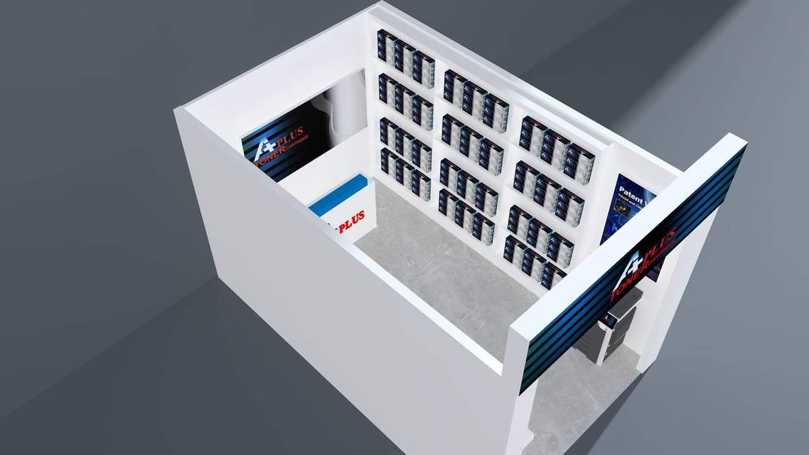
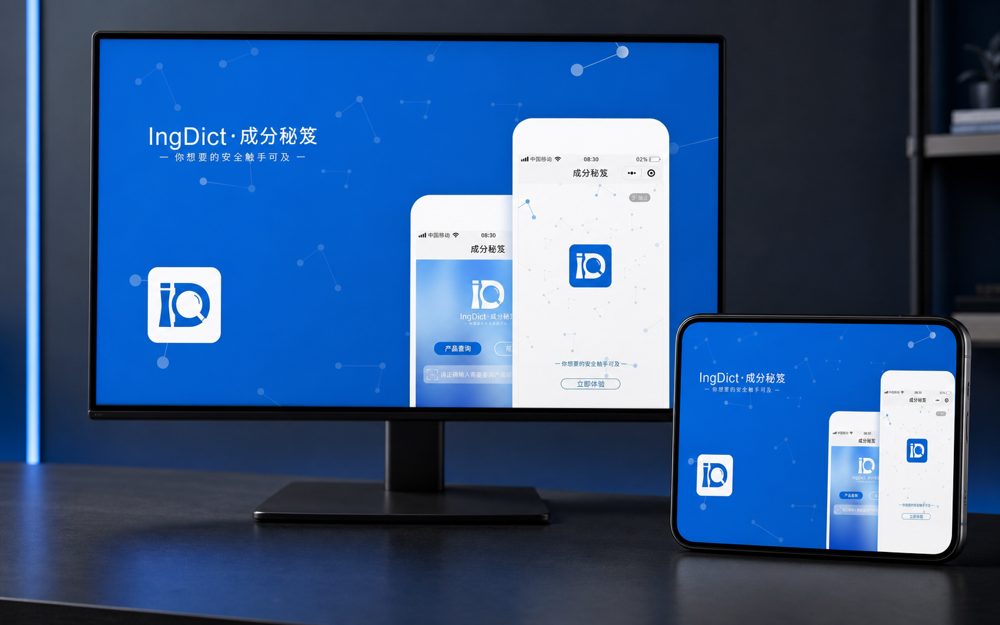
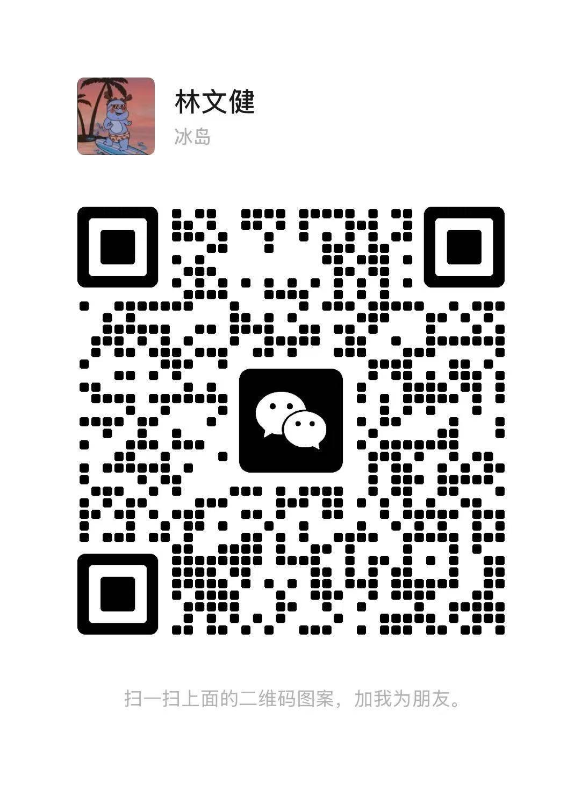

i-AICON / 2023—至今BRAND APPLICATION SYSTEM
i-AICON品牌应用与商业物料
以既有 VI 规范为基础。统一信息层级与版式规则。延展至多规格、多语言物料。
- 负责范围
- 包装海报折页招商手册
- 应用场景
- 海外宣传社交媒体展会销售资料
40+包装规格
100+宣传海报
10+宣传折页
54P招商手册
5语言适配
PROJECT DIRECTORY
品牌案例 · 多场景应用更多作品 · 补充设计能力
从项目背景、负责范围到最终成果，完整呈现长期品牌视觉工作。

i-AICON / 2023—至今BRAND APPLICATION SYSTEM
以既有 VI 规范为基础。统一信息层级与版式规则。延展至多规格、多语言物料。
INNERGY / CASE 02
将密集资料整理为阅读层级。用目录、表格串联产品内容。以统一版式衔接不同章节。
MAGIC FACTORS / CASE 03
以系列配色建立品牌识别。用产品主视觉聚焦传播。通过分段编排组织长图阅读。
按主要业务能力快速浏览；每个入口仅展示相关代表原稿与延展。

包装设计 · 产品呈现
查看项目 ↗
品牌介绍 · 产品编排
查看完整画册 ↗
展示物料 · 终端应用
查看项目 ↗
界面方案 · 操作流程
查看项目 ↗ABOUT & EXPERIENCE
熟悉线上传播与印刷落地。保持品牌应用的一致性。持续完善设计与执行能力。
常用设计工具
工作经历
平面设计专员
平面设计师
平面设计师
设计总监
平面设计师
广东省高等教育自学考试 · 主考院校：深圳大学
